Интермеццо 3: Область/рамки действия(Scope) и Абстракция
В то время как предыдущая часть обходится без объяснения local и lambda-выражения в неформальной манере, введение таких механизмов абстракции действительно требует дополнительной терминологии для облегчения таких обсуждений. В частности, для этих обсуждений нужны слова(понятия), чтобы очертить области внутри программ и указать на конкретное использование переменных.
Это интермеццо начинается с раздела, в котором определяется новая терминология: scope (область видимости), binding(привязка) переменных и связанные/ограниченные(bound) переменные. Оно немедленно использует эту новую возможность для введения двух механизмов абстракции, часто встречающихся в языках программирования: циклов for и pattern matching(сопоставления с образцом). Первый вариант является альтернативой таким функциям, как map, build-list, andmap и т. Д .; последний абстрагируется от условий в функциях первых трех частей книги. Оба требуют не только определения функций, но и создания совершенно новых языковых конструкций, то есть они не являются чем-то, что программисты обычно могут проектировать и добавлять к своему словарю.
Scope(Область/Рамки действия)
В то же время первое появление x в f отличается от других. Когда мы вычисляем (f n), вхождение f полностью исчезает, а вхождение x заменяется на n. Чтобы различать эти два типа вхождений переменных, мы называем x в заголовке функции binding occurrence(входящая привязка), а в теле функции - bound occurrences(связанные вхождения/экземпляры). Мы также говорим, что возникновение привязки x связывает все вхождения x в теле f. Действительно, у людей, изучающих языки программирования, есть даже название области, в которой работает входящая привязка(binding occurrence), а именно ее lexical scope(лексическая область действия).
Определения f и g связывают еще два имени: f и g. Их область действия называется top-level scope(областью действия верхнего уровня), потому что мы считаем области действия вложенными (см. Ниже).
> f f
> g g
> x x:this variable is not defined
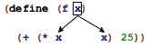
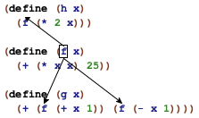
(define (p1 x y) (+ (* x y) (+ (* 2 x) (+ (* 2 y) 22)))) (define (p2 x) (+ (* 55 x) (+ x 11))) (define (p3 x) (+ (p1 x 0) (+ (p1 x 1) (p2 x))))
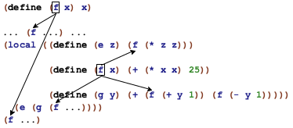
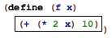
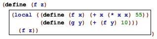
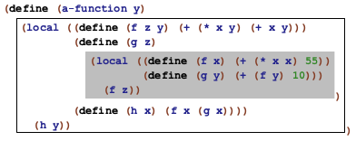
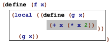
Как правило, если одно и то же имя встречается в функции более одного раза, прямоугольники, описывающие соответствующие области действия, никогда не перекрываются. В некоторых случаях прямоугольники вкладываются друг в друга, что приводит к образованию дыр. Тем не менее, картина всегда представляет собой иерархию все меньших и меньших вложенных прямоугольников.
(define (insertion-sort alon) (local ((define (sort alon) (cond [(empty? alon) '()] [else (add (first alon) (sort (rest alon)))])) (define (add an alon) (cond [(empty? alon) (list an)] [else (cond [(> an (first alon)) (cons an alon)] [else (cons (first alon) (add an (rest alon)))])]))) (sort alon))) Рисунок 105: Рисование контуров лексической области к упражнению 301
Упражнение 301. Обведите прямоугольником область действия каждой входящей привязки sort и alon на рисунке 105. Затем нарисуйте стрелки от каждого экземпляра sort к соответствующей входящей привязке. Теперь повторите упражнение для варианта, показанного на рис. 106. Различаются ли две функции не по названию?
(define (sort alon) (local ((define (sort alon) (cond [(empty? alon) '()] [else (add (first alon) (sort (rest alon)))])) (define (add an alon) (cond [(empty? alon) (list an)] [else (cond [(> an (first alon)) (cons an alon)] [else (cons (first alon) (add an (rest alon)))])]))) (sort alon))) Рисунок 106: Рисование контуров лексической области действия для упражнения 301 (версия 2)
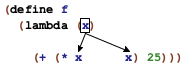
ISL циклы for
Несмотря на то, что это слово никогда не упоминается, Абстракция вводит циклы. Абстрактно, loop(цикл) просматривает составные данные, обрабатывая Используйте библиотеку 2htdp/abstraction . Преподаватели, использующие её до конца книги, должны объяснить, как принципы разработки применяются к языкам без использования for и match. по одному фрагменту за раз. При этом циклы также синтезируют данные. Например, map просматривает список, применяет функцию к каждому элементу и собирает результаты в список. Точно так же build-list перечисляет последовательность предшественников натурального числа (от 0 до (- n 1)), сопоставляет каждое из них с некоторым значением, а также собирает результаты в список.
Циклы ISL+ отличаются от циклов в традиционных языках двумя способами. Во-первых, обычный цикл не создает новых данных напрямую; Напротив, такие абстракции, как map и build-list, предназначены для вычисления новых данных из обходов. Во-вторых, традиционные языки часто предоставляют только фиксированное количество циклов; программист ISL+ определяет новые циклы по мере необходимости. Иными словами, традиционные языки рассматривают циклы как синтаксические конструкции, похожие на local или cond, и их введение требует подробного объяснения их словаря, грамматики, области действия и смысла.
Циклы как синтаксические конструкции имеют два преимущества перед функциональными циклами из предыдущей части. С одной стороны, их форма имеет тенденцию более прямо сигнализировать о намерениях, чем сочетание функций. С другой стороны, языковые реализации обычно переводят синтаксические циклы в более быстрые команды для компьютеров, чем функциональные циклы. Поэтому часто даже языки функционального программирования - со всем их упором на функции и функциональные композиции - предоставляют синтаксические циклы.
В этом разделе мы представляем так называемые циклы for в ISL+. Цель состоит в том, чтобы проиллюстрировать, как рассматривать обычные циклы как лингвистические конструкции, и показать, как программы, построенные с помощью абстракций, могут вместо этого использовать циклы. На рисунке 107 представлена грамматика выбранных нами циклов for как расширение грамматики BSL из Intermezzo 1: Beginning Student Language(язык для начинающих учеников). Каждый цикл является выражением и, как и все составные конструкции, помечается ключевым словом. Далее следует заключенная в скобки последовательность так называемых поясняющих предложений и одно выражение. В предложениях вводятся так называемые loop variables(переменные цикла), а выражение в конце - это loop body(тело цикла).
expr = ... | (for/list (clause clause ...) expr) | (for*/list (clause clause ...) expr) | (for/and (clause clause ...) expr) | (for*/and (clause clause ...) expr) | (for/or (clause clause ...) expr) | (for*/or (clause clause ...) expr) | (for/sum (clause clause ...) expr) | (for*/sum (clause clause ...) expr) | (for/product (clause clause ...) expr) | (for*/product (clause clause ...) expr) | (for/string (clause clause ...) expr) | (for*/string (clause clause ...) expr) clause = [variable expr] Рисунок 107: ISL+ расширенный с помощью циклов for
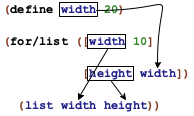
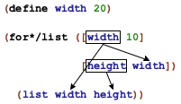
-
список, элементы которого составляют значения последовательности;
-
натуральное число n, последовательность состоит из 0, 1, ..., (- n 1); а также
-
строка, ее односимвольные(содеражщие один символьный знак) строки являются элементами последовательности.
Терминология Каждое вычисление тела цикла называется итерацией. Точно так же говорят, что цикл итерирует(перебирает) значения переменных цикла.
> (for/list ([i 10]) i) (list 0 1 2 3 4 5 6 7 8 9)
> (build-list 10 (lambda (i) i)) (list 0 1 2 3 4 5 6 7 8 9)
> (local ((define i-s (build-list 2 (lambda (i) i))) (define j-s '(a b))) (map list i-s j-s)) (list (list 0 'a) (list 1 'b))
Пример Задачи Разработайте enumerate. Функция использует список и создает список тех же элементов в паре с их относительным индексом.
; [List-of X] -> [List-of [List N X]] ; pairs each item in lx with its index (check-expect (enumerate '(a b c)) '((1 a) (2 b) (3 c))) (define (enumerate lx) (for/list ([x lx] [ith (length lx)]) (list (+ ith 1) x)))
> (define width 2)
> (for/list ([width 3][height width]) (list width height)) (list (list 0 0) (list 1 1))
> (for*/list ([width 3][height width]) (list width height)) (list (list 1 0) (list 2 0) (list 2 1))
Пример Здачи Разработайте cross. Функция использует два списка, l1 и l2, и производит пары всех элементов из этих списков.
; [List-of X] [List-of Y] -> [List-of [List X Y]] ; generates all pairs of items from l1 and l2 (check-satisfied (cross '(a b c) '(1 2)) (lambda (c) (= (length c) 6))) (define (cross l1 l2) (for*/list ([x1 l1][x2 l2]) (list x1 x2)))
; [List-of X] -> [List-of [List-of X]] ; creates a list of all rearrangements of the items in w (define (arrangements w) (cond [(empty? w) '(())] [else (for*/list ([item w] [arrangement-without-item (arrangements (remove item w))]) (cons item arrangement-without-item))])) ; [List-of X] -> Boolean (define (all-words-from-rat? w) (and (member? (explode "rat") w) (member? (explode "art") w) (member? (explode "tar") w))) (check-satisfied (arrangements '("r" "a" "t")) all-words-from-rat?) Рисунок 108: Компактное определение arrangements с помощью for*/list
Примечание На рисунке 108 показано использование for*/list в другом контексте. Оно отображает компактное решение проблемы расширенного проектирования по созданию всех возможных перестановок букв в заданном списке.
В то время как Игры со словами, Суть проблемы изображает правильный проект этой сложной программы, рисунок 108 использует объединенную мощь for*/list и необычную форму рекурсии, чтобы определить ту же Мы благодарим Марка Энгельберга за предложение этой демонстрации выразительной силы. программу как одно пятистрочное определение функции. Рисунок просто демонстрирует силу этих абстракций; основной замысел см. в упражнении 477. Конец
-
.../and собирает значения всех итераций с помощью and:
Для прагматики цикл возвращает последнее сгенерированное значение или #false. -
Эти циклы возвращают первое значение, отличное от #false.
-
.../sum складывает числа, генерируемые итерациями:
> (for/sum ([c "abc"]) (string->int c)) 294
-
.../product умножает числа, генерируемые итерациями
> (for/product ([c "abc"]) (+ (string->int c) 1)) 970200
-
> (define a (string->int "a")) > (for/string ([j 10]) (int->string (+ a j))) "abcdefghij"
Остановись снова! Это поучительное упражнение, чтобы переформулировать все вышеперечисленные примеры с использованием существующих абстракций в ISL+. Оно также показывает, как разрабатывать функции с циклами for вместо абстрактных функций. Подсказка Разработайте and-map и or-map, которые работают как andmap и ormap, соответственно, но возвращают соответствующие значения, отличные от #false.
; N -> sequence? ; constructs the infinite sequence of natural numbers, ; starting from n (define (in-naturals n) ...) ; N N N -> sequence? ; constructs the following finite sequence of natural numbers: ; start ; (+ start step) ; (+ start step step) ; ... ; until the number exceeds end (define (in-range start end step) ...) Рисунок 109: Построение последовательностей натуральных чисел
Цикл по числам не всегда сводится к перечислению от 0 до (- n 1). Часто программам необходимо проходить непоследовательные последовательности чисел; в других случаях требуется неограниченное количество чисел. Чтобы приспособиться к этой форме программирования, Racket поставляется с функциями, которые генерируют последовательности, а на рис. 109 перечислены две из них, которые предусмотрены в библиотеке абстракций для ISL+.
(define (enumerate.v2 lx) (for/list ([item lx] [ith (in-naturals 1)]) (list ith item)))
; N -> Number ; adds the even numbers between 0 and n (exclusive) (check-expect (sum-evens 2) 0) (check-expect (sum-evens 4) 2) (define (sum-evens n) (for/sum ([i (in-range 0 n 2)]) i))
Упражнение 305. Используйте циклы для определения convert-euro. См. Упражнение 267.
-
создает список (list 0 ... (- n 1)) для любого натурального числа n;
-
создает список (list 1 ... n) для любого натурального числа n;
-
создает список (list 1 1/2 ... 1/n) для любого натурального числа n;
-
создает список первых n четных чисел; а также
-
создает диагональный квадрат из 0s и 1s; См. упражнение 262.
Упражнение 307. Разаработайте find-name. Функция использует имя и список имен. Она извлекает первое имя последнего, которое равно или является расширением первого.
Определите функцию, которая гарантирует, что ни одно имя в некотором списке имен не превышает заданную ширину. Сравните с упражнением 271.
Соответствие шаблону(Pattern Matching)
Когда мы разрабатываем функцию для определения данных с шестью предложениями, мы используем шестизначное выражение cond. Когда мы формулируем одно из предложений cond, мы используем предикат, чтобы Заинтересованный инструктор может пожелать изучить возможности библиотеки 2htdp/abstraction для определения алгебраических типов данных. определить, должно ли это предложение обрабатывать данное значение и, если да, селекторы для деконструкции любых составных значений. Первые три части этой книги объясняют эту идею снова и снова.
Повторение требует абстракции. Хотя Абстракция объясняет, как программисты могут создавать некоторые из этих абстракций, шаблон предикат-селектор может быть рассмотрен только разработчиком языка. В частности, разработчики языков функционального программирования осознали необходимость абстрагирования от этого повторяющегося использования предикатов и селекторов. Таким образом, эти языки обеспечивают pattern matching(сопоставление с образцом) как лингвистическую конструкцию, которая объединяет и упрощает эти предложения cond.
В этом разделе представлена упрощенная схема сопоставления с образцом Racket. Рисунок 110 отображает его грамматику; match - явно синтаксически сложная конструкция. Хотя её схема похожа на схему cond, в ней используются шаблоны/образцы, а не условия, и они имеют свои собственные правила.
expr = ... | (match expr [pattern expr] ...) pattern = variable | literal-constant | (cons pattern pattern) | (structure-name pattern ...) | (? predicate-name) Рисунок 110: выражения соответствия
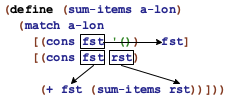
(? predicate-name)
Семантически шаблон соответствует(matched) значению v. Если шаблон
-
literal-constant, он соответствует только этой буквенной константе
> (match 4 ['four 1] ["four" 2] [#true 3] [4 "hello world"]) "hello world"
-
variable, она соответствует любому значению и связывается с этим значением во время вычисления тела соответствующего предложения match
Поскольку 2 не совпадает с первым шаблоном, который является буквенной константой 3, match соответствует 2 со вторым шаблоном, который является простой переменной и, следовательно, соответствует любому значению. Следовательно, match выбирает второе предложение и вычисляет его тело, где x означает 2. -
(cons pattern1 pattern2), он соответствует только экземпляру cons, предполагая, что его первое поле соответствует pattern1, а его остальное соответствует pattern2
-
(structure-name pattern1 ... patternn), он соответствует только структуре structure-name, предполагая, что его значения полей соответствуют pattern1, ..., patternn
Очевидно, сопоставление экземпляра posn с шаблоном аналогично сопоставлению с шаблоном cons. Однако обратите внимание, как в шаблоне используется posn для шаблона, а не имя конструктора.Сопоставление также работает для наших собственных определений структурных типов:> (define-struct phone [area switch four]) > (match (make-phone 713 664 9993) [(phone x y z) (+ x y z)]) 11370
Опять же, в шаблоне используется название структуры, phone.Наконец, сопоставление также работает на нескольких уровнях конструкций:> (match (cons (make-phone 713 664 9993) '()) [(cons (phone area-code 664 9993) tail) area-code]) 713
Это выражение match извлекает код города из телефонного номера в списке, если код switch(коммутатора) - 664, а последние четыре цифры - 9993. -
(? predicate-name), он соответствует, когда (predicate-name v) возвращает #true
Это выражение дает 1, результат второго предложения, потому что 1 не является символом. .
Пример задачи Создайте функцию last-item, которая извлекает последний элемент в непустом списке. Напомним, что непустые списки определяются следующим образом:
; A [Non-empty-list X] is one of: ; – (cons X '()) ; – (cons X [Non-empty-list X])
; [Non-empty-list X] -> X ; retrieves the last item of ne-l (check-expect (last-item '(a b c)) 'c) (check-error (last-item '())) (define (last-item ne-l) (match ne-l [(cons lst '()) lst] [(cons fst rst) (last-item rst)]))
Давайте посмотрим на вторую проблему из Произвольно большие данные:
Пример Задачи Разработайте функцию depth, которая измеряет количество слоев, окружающих Русскую матрешку. Вот снова определение данных:
(define-struct layer [color doll]) ; An RD.v2 (short for Russian doll) is one of: ; – "doll" ; – (make-layer String RD.v2)
; RD.v2 -> N ; how many dolls are a part of an-rd (check-expect (depth (make-layer "red" "doll")) 1) (define (depth a-doll) (match a-doll ["doll" 0] [(layer c inside) (+ (depth inside) 1)]))
Пример Задачи Разработайте функцию move-right. Она использует список Posns, которые представляют позиции объектов на холсте, плюс число. Функция добавляет последнее к каждой координате x, что представляет собой движение этих объектов вправо.
; [List-of Posn] -> [List-of Posn] ; moves each object right by delta-x pixels (define input `(,(make-posn 1 1) ,(make-posn 10 14))) (define expect `(,(make-posn 4 1) ,(make-posn 13 14))) (check-expect (move-right input 3) expect) (define (move-right lop delta-x) (for/list ((p lop)) (match p [(posn x y) (make-posn (+ x delta-x) y)])))
Стоп! Как сравнить решения с cond и селекторами? Запишите это и сравните два. Какой из них вам больше нравится?
Упражнение 308. Разработайте функцию replace, которая заменяет код города 713 на 281 в списке телефонных записей.
Упражнение 309. Разработайте функцию words-on-line, которая определяет количество Strings(строк) для каждого элемента в списке списков строк.